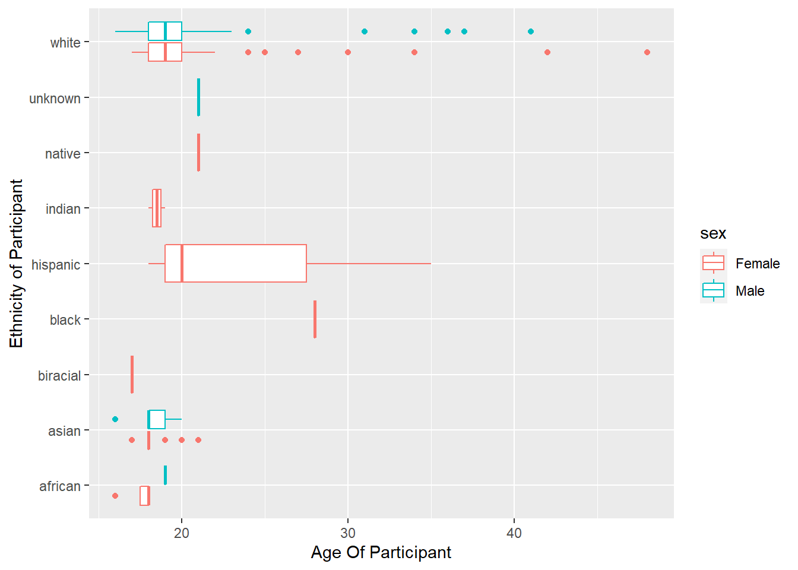
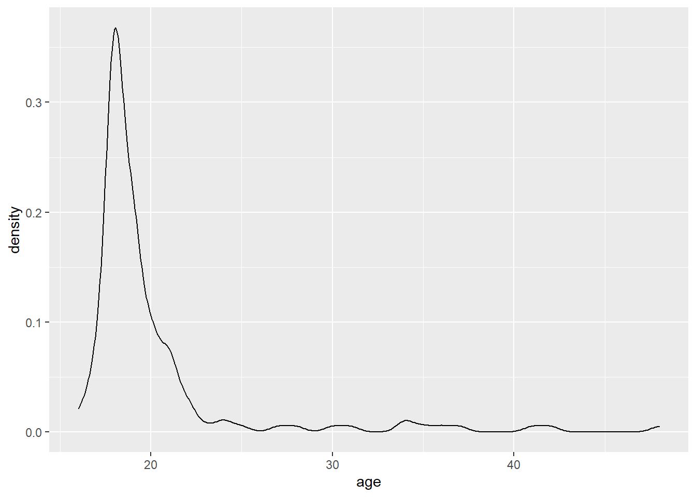

Code
library(tidyverse)
library(here)library(tidyverse)
library(here)hiphop <- read.csv(here::here("supporting_artifacts", "Lab & Challenge 3",
"hiphop.csv"))The Hip-Hop dataset outlines various definitions of vocabulary commonly found in AAE (African-American English) dialect. The study’s participants are students enrolled in undergraduate linguistics, sociology, and music classes at the university of Minnesota. These participants were coded as subjects, and their responses and demographic info are listed next to each word in the dataset. These definitions were given by 168 participants from various backgrounds. The purpose of the data set is to see if musical tastes, with a focus in Hip-Hop, can predict AAE knowledge to a higher degree than ethnicity, social network phenomena, and general pop-culture knowledge. The rows of the dataset are each unique definition for a specific vocab word found within AAE. The NA values in this dataset were replaced with a float value of 0.0, the benefit of this would be that you can do summary statistics without having errors, however the summary statistics would be heavily skewed due to the value of 0 pulling them downwards. Additionally, some of the variables with NA have the mean value of the variable instead of an NA. Replacing some of the NA values with the mean of the dataset will pull the percentiles closer to the mean.
clean_hiphop <- hiphop |>
mutate(across(where(is.character), factor)) |>
filter(city != 0, county != 0, !is.na(numPreferredArtists),
!is.na(numOverallArtists))Changed Strings into Factors
Filtered out rows where city & county = 0
filtered out rows where numPreferredArtists & numOverallArtists = NA
Explanation:
I filtered out rows with no city / county values, as I do not like having incomplete rows of data within my dataset. I altered the character variables to factors for more efficiency, as factor variables have more efficient memory usage. Lastly, I filtered out rows where numPreferredArtists & numOverallArtists = NA because I do not like rows of incomplete data within my dataset.
distinct_hiphop <- distinct(clean_hiphop,word)
count(distinct_hiphop) n
1 64As seen from the code, there are 64 unique words in the data set.
clean_hiphop <- clean_hiphop |>
mutate(ethnic_categorical = ifelse(ethnic == "white",
"white",
"non-white")) |>
relocate(ethnic_categorical, .after = ethnic)I use the normal “unclean” dataset for this investigation as I would like to have more datapoints to truly see some statistical analysis of the whole dataset rather than a subset. Additionally, The NA & 0 values i cleaned would not make a difference in this investigation.
sex_demographic_clean_hiphop <- hiphop |>
distinct(subj, .keep_all = TRUE) |>
count(sex)
sex_demographic_clean_hiphop sex n
1 Female 117
2 Male 51age_demographic_clean_hiphop <- hiphop |>
distinct(subj, .keep_all = TRUE) |>
summarise(mean_age = mean(age))
age_demographic_clean_hiphop mean_age
1 20.02381ethnic_demographic_clean_hiphop <- hiphop |>
distinct(subj, .keep_all = TRUE) |>
group_by(ethnic) |>
count(ethnic)
ethnic_demographic_clean_hiphop# A tibble: 9 × 2
# Groups: ethnic [9]
ethnic n
<chr> <int>
1 african 5
2 asian 19
3 biracial 1
4 black 1
5 hispanic 3
6 indian 2
7 native 1
8 unknown 1
9 white 135As a result of the filtering and analysis above, a vast majority of the participants seem to be female, white, and the participants have an average age of 20.02 years old. For reference, about 69.64% of the participants were female, and 80.35% of the participants were white.
plot_hiphop <- hiphop |>
distinct(subj, .keep_all = TRUE)
ggplot(plot_hiphop, aes(x= age, y= ethnic, color = sex)) +
geom_boxplot() +
labs(x= "Age Of Participant",
y= "Ethnicity of Participant",
color = "sex")
ggplot(plot_hiphop, aes(x = age)) +
geom_density()
young_clean_hiphop_max <- clean_hiphop |>
filter(age < 20) |>
select(word, familiarity) |>
group_by(word) |>
summarise(mean = mean(familiarity), n = n()) |>
slice_max(mean)
young_clean_hiphop_min <- clean_hiphop |>
filter(age < 20) |>
select(word, familiarity) |>
group_by(word) |>
summarise(mean = mean(familiarity), n = n()) |>
slice_min(mean)
young_clean_hiphop_max# A tibble: 1 × 3
word mean n
<fct> <dbl> <int>
1 feel me 4.51 57young_clean_hiphop_min# A tibble: 1 × 3
word mean n
<fct> <dbl> <int>
1 The Nation 1 57Most Familiar: “Feel Me”
Least Familiar: “The Nation”
non_white_clean_hiphop_max <- clean_hiphop |>
filter(ethnic != "white", sex == "Female") |>
group_by(word) |>
summarise(mean = mean(familiarity), n = n()) |>
slice_max(mean)
non_white_clean_hiphop_min <- clean_hiphop |>
filter(ethnic != "white", sex == "Female") |>
group_by(word) |>
summarise(mean = mean(familiarity), n = n()) |>
slice_min(mean)
non_white_clean_hiphop_max# A tibble: 1 × 3
word mean n
<fct> <dbl> <int>
1 what it do 4.83 12non_white_clean_hiphop_min# A tibble: 8 × 3
word mean n
<fct> <dbl> <int>
1 break someone out 1 12
2 dollar cab 1 12
3 domino 1 12
4 dukey rope 1 12
5 humming 1 12
6 plex 1 12
7 rollie 1 12
8 The Nation 1 12Most Familiar: “What It Do”
Least Familiar: All of the 8 phrases from the 2nd above.
white_30_clean_hiphop_max <- clean_hiphop |>
filter(ethnic == "white", sex == "Male", age > 30) |>
group_by(word) |>
summarise(mean = mean(familiarity), n = n()) |>
slice_max(mean)
white_30_clean_hiphop_min <- clean_hiphop |>
filter(ethnic == "white", sex == "Male", age > 30) |>
group_by(word) |>
summarise(mean = mean(familiarity), n = n()) |>
slice_min(mean)
white_30_clean_hiphop_max# A tibble: 3 × 3
word mean n
<fct> <dbl> <int>
1 5-0 5 1
2 hard 5 1
3 make it rain 5 1white_30_clean_hiphop_min# A tibble: 59 × 3
word mean n
<fct> <dbl> <int>
1 [to be] ghost 1 1
2 A-town 1 1
3 ashy 1 1
4 ay yo trip 1 1
5 ballin' 1 1
6 beezy 1 1
7 bones 1 1
8 boo 1 1
9 boughie 1 1
10 break someone out 1 1
# … with 49 more rowsMost Familiar: 3 phrases from the top output
Least Familiar: All of the 59 phrases from the 2nd above
justin_bieber_data <- hiphop |>
distinct(subj, .keep_all = TRUE) |>
filter(sex == "Male", age >= 17, age <= 23, ethnic == "white", city >= 10000,
city <= 60000) |>
slice_max(bieber)
justin_bieber_data$subj[1] "p17"Note: I opted to not include the output for this slice as it was extremely long. Please see the dataset for proof that subject 17 has the highest Bieber score.
I would say that subject 17 is Justin Bieber. He fulfills the gender, age, and city requirements, and has the highest “Bieber” score of the dataset.